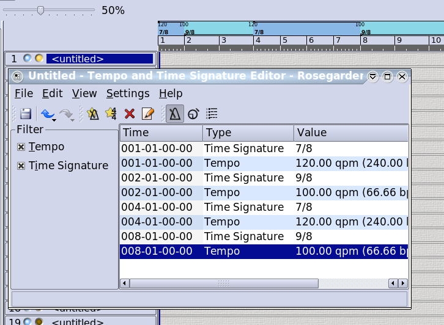
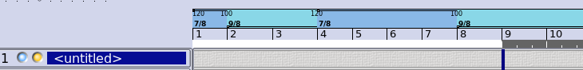
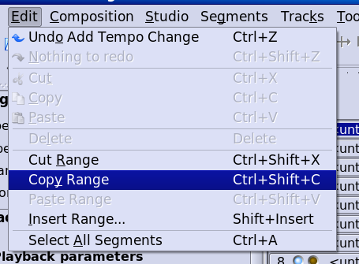
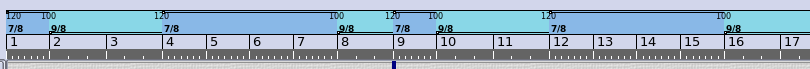
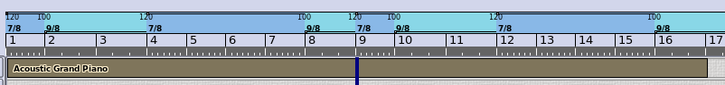
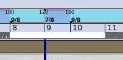
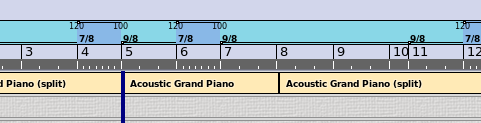
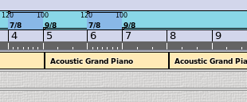
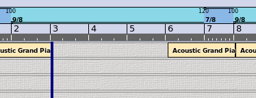

The Rosegarden Notation Challenge
Copyright © 2008 D. Michael McIntyre
This tutorial was written using a pre-release version of Rosegarden 1.7.1/1.8.0 (tba).
Copying Tempo and Time Signature Changes
I found this question on the user list this morning:
Hello,
My music is often composed of sequences of Time Signatures which follows one to another. For example: 7/8 9/8 9/8 7/8 7/8 7/8 7/8 9/8. I've never found a way to copy this "time signatures pattern" so that I don't have to set the 8 signatures in every sequence (if the sequence is repeating 8 times, it begins to be a bit boring).
Actually, the result is that I have been writing some sequences only one time when I want thstrong to be played twice or more, and I've told the musicians how it worked.
But I now must fix the .rg files so that we can play on it as a metronome/"témoin" for recording. Thus, I have to know how to propagate this "time signatures patterns", and, moreover, I have to figure out how to slide bunches of segments/time signatures changes/tempo changes, and so on some bars further.
Could someone help me on this?
Thank you very much.
Example Copied
Let's begin by implementing the suggested example time signature pattern of "7/8 9/8 9/8 7/8 7/8 7/8 7/8 9/8." For illustrative purposes, we'll also insert tempo changes with each time change, to demonstrate how both of these can benefit from the same mechanism, and to make it easier to see the time blocks at a glance.
I entered everything with the Tempo and Time Signature Editor, yielding the following result:

From here, the final 9/8 continues to the end of the document in perpetuity. If we want to repeat this pattern of time (and tempo) changes to begin anew at bar 9, we can do it the hard way, by repeating the series of steps that lead us to this current result, or we can exploit the range copy/paste mechanism to make the process less tedious. (There was a nasty bug in this mechanism in 1.7.0, so I suggest using a version either earlier or later than this, which as of this writing means 1.6.1 or a recent build of the SVN trunk.)
First, we need to define a range that spans the eight bars in question. There are two ways to accomplish this. You can Shift+Click and drag on the ruler to draw out the white loop/range selection bar, or you can position the blue playback cursor at the start of the range, then use the button on the transport, and finally reposition the cursor to the end of the range, and use the button to finish the loop/range.

Or you can cheat and just load this file
Having thus defined the range, we can now copy it with Edit -> Copy Range or Ctrl+Shift+C

Now move the blue cursor to the start of bar 9 (if it isn't already there) and Edit -> Paste Range or Ctrl+Shift+V to paste it.

The pattern of time and tempo changes has been duplicated successfully from 9 to 16. Now repeat as required to achieve the desired result. NOTE: The range copy/paste mechanism not only grabs tempo and time signature changes as demonstrated here in this otherwise empty composition, but also events in all segments on all tracks in the area defined by the range.
Inserting a Copied Range
Moving on from the preceding example, let's say we want to insert a block of time and tempo changes (and any other events in all segments on all tracks occurring at this time) at bar 5, sliding the existing events out of the way.
First, let's draw a segment from 1 to 17 in order to make it easier to see the results of the operation to follow:

Now let's define a range from 8 to 11, and copy it:

Now move the blue cursor to bar 5, and paste the range:

This segment is empty, and there are no audible results, but we can see that the original segment has been cut into three pieces, with a copy of a bit of itself inserted beginning at bar 5. The tempo and time signature changes have been copied and inserted here as well.

Inserting an Empty Range
The final use for this feature is to insert some empty space at an arbitrary point in the middle of something else. Let's say we want to insert three empty bars starting at bar 3.
First, move the blue cursor to bar 3. Then use Edit -> Insert Range or Shift+Insert, which will produce a "Duration of empty range to insert" dialog. I have set my dialog to insert the three empty measures just discussed:

In the final result, we can see that there is now a three-bar hole in the example segment, showing us where the empty range has gone. NOTE: the empty range will have whatever time signature is in effect at the point of insertion. It is not possible to insert an empty range that contains multiple time signatures. To do this, copy a block of time signatures from somewhere else, and paste them here to insert them instead.

The end! I hope this answered your question in a satisfactory manner.